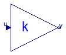

For all models in this package an FMU must be generated
Extends from Modelica.Icons.Package (Icon for standard packages).
| Name | Description |
|---|---|
 FMITest.SimpleConnections.Series1.FMUModels.Gain1
FMITest.SimpleConnections.Series1.FMUModels.Gain1

Extends from Modelica.Blocks.Math.Gain (Output the product of a gain value with the input signal).
| Type | Name | Default | Description |
|---|---|---|---|
| Real | k | Gain value multiplied with input signal [1] |
| Type | Name | Description |
|---|---|---|
| input RealInput | u | Input signal connector |
| output RealOutput | y | Output signal connector |
FMITest.SimpleConnections.Series1.FMUModels.Gain2
Extends from Modelica.Blocks.Math.Gain (Output the product of a gain value with the input signal).
| Type | Name | Default | Description |
|---|---|---|---|
| Real | k | Gain value multiplied with input signal [1] |
| Type | Name | Description |
|---|---|---|
| input RealInput | u | Input signal connector |
| output RealOutput | y | Output signal connector |